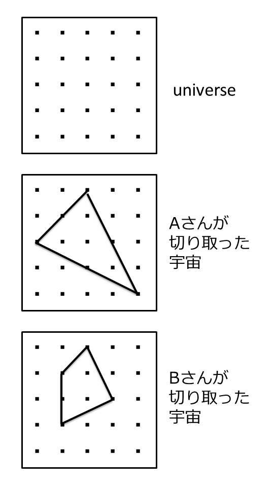

| 「引き寄せ」をやめると願いが叶う: あなたの夢を阻むたった一つの間違い | |
| かるべおさむ | |
| (2018) | |
筆者はこれまでに６冊の短い本を通じて、それぞれ角度を変えながらできる限り簡潔に「引き寄せ」の法則とそれに向き合う方法をお伝えしてきました。それは「引き寄せ」の法則の基礎から説いたものではなく、「引き寄せ」について様々な本をすでに読んできた読者向けに書いた「参考書」的な位置づけの著作ばかりでありながら、予想外に多くの方々の目に止まり、好意的なレビューとともに、ホームページにもたくさんの歓びのメッセージをいただいています。これは書き手として本当に悦ばしいことです。
しかしその一方で、どれほど口を酸っぱくして言っても願望への執着から離れられずにもがき苦しんでいる状況を切々と伝えるお便りが引きも切らず、それが次々と続編を著すモチベーションになりました。『あなたの「引き寄せ」は間違っていた～１時間で思い通りの人生を築く本』
から始まったこのシリーズでしたが、『universe』
で「引き寄せ」に関する世界観を余すところなく描いて思いの丈を書き尽くし、それでもなおもがいている読者に向けて『あなたのここを直せば願いは叶う』
を贈り、これですべて完結させるつもりだったのです。
しかし、悲鳴にも似たメッセージはなお止みません。ただ幸いにもそれは筆者に対する苦情などではなく、筆者の論は腑に落ちたものの、実践段階でどうしても結果がともなってこないという悲鳴でした。
これも筆者の表現力の拙さゆえなのでしょう。万人に伝わる表現というのはなかなか見つけられません。ある人には刺さる表現が、別の人には刺さらない。すべての読者が違う背景を持っているのですから、当たり前といえば当たり前のことなのですが。
こうなったら、とことんおつきあいしましょう。本業に差し障りのない限り、許され得る時間をすべて費やして、すべての読者の夢を叶えるまで。あなたの夢が当たり前のように叶って、やがてかるべおさむの名など忘却の彼方に葬り去られる日が来ることを願って。
本書には過去の６作と内容が重なる部分も多いかもしれません。同じ人間が同じことを説明しようとしているのですから当然そうなることでしょう。しかし、そこはできる限り違う言葉を使って別の角度から表現していこうと思います。
その新たな表現が、ある時には過去の６作とは相容れないように映るかもしれません。しかし、根っこはまったく同じだと理解してください。富士山にも静岡側と山梨側でそれぞれ違う顔があるように、一つの真理を伝える時にも眺める方向によって別の表現が存在するのです。その別の表現こそが、モヤモヤしたあなたの理解に絶妙な角度で突き刺さると信じています。
ここは以前読んだような気がするから飛ばそうという部分に突き当たることもあるでしょう。しかし、そういう箇所こそしっかりと読み直して、あなたの理解を書き換えてください。そこにこそ、あなたが夢を実現できずにくすぶっている理由が潜んでいるはずですから。
そのくすぶっている理由が何であるのか、筆者にはもう手に取るようにわかっています。あなたはたった一つの思い違いをしているのです。あるいは、何となくわかっていながら、どうしてもそこを手放せなくて葛藤しているのかもしれません。だからこそこのタイトルに惹かれ、本書を入手したのではなかったでしょうか。
そのたった一つの思い違いさえ正せば、あなたは間違いなく正しい方向に進んで、首尾よく願望を実現できるということをここでお約束します。
これまで話を噛み砕きすぎて本質論をいささか端折ってきたことに対する反省から、本書ではこれまでよりいくらか難しい話もさせていただきます。どうか面倒くさがらずにじっくりと腑に落として読み切ってください。
２０１８年 厳冬の軽井沢にて
「思ったことは現実になる」。本書の読者ならもう耳にタコができるほど聞かされていることでしょうが、言うまでもなくこれが「引き寄せ」の法則の原点です。まずは思うことから始まる。ここが揺らぐことはありません。
ただ、なぜ「思ったことは現実になる」のかについては、曖昧な理解のまま「何となくこんな感じ」程度でお茶を濁しているという方も多いのではないでしょうか。
ここをきちんと腑に落としていないまま実践的なことに走ってばかりの方は、概して願望を実現するどころか、かえって遠ざけてしまっているように映ります。これは筆者のホームページに寄せられる様々な「悲鳴」を分析していても痛感することです。
それは取りも直さず、筆者も含めて「引き寄せ」の法則の語り部の説明が十分でないことに最大の原因があるのでしょう。まずは筆者としてもお詫び申し上げなければなりません。
筆者の場合、このことについては最初の著書である『あなたの「引き寄せ」は間違っていた』
から始まったこのシリーズでしたが、『universe』
において、一つの譬え話で説明しました。そこで書いたのは、
願望というのは宇宙に置いた「鋳型」のようなもの。いちど願うと「鋳型」ができて、その中に「感謝」のエネルギーが流れ込み、それがある閾値を超えたら現実となって現れる。
こういう趣旨です。
もちろんこの説明で十分に理解して腑に落とすことができた読者も多く、大なり小なり願いを叶え、その歓びを伝えてくださいました。しかしその一方で、もっと直接的な表現を求める声もあって、そうした要望に応える形で、後に書いた、『universe』
という「引き寄せ」の世界観の集大成ともいうべき著書では、これをもう少し詳細に説明しています。
世界のありようを客観的な視点からミクロに見ていくと、それはエネルギーの最小単位である量子単位にまで分解できます。物質の最小単位は量子が有と無という状態を行き来する「波」というエネルギーになっています。認識する側がその波をどう感じるかによって、世界の見え方が変わってきます。『こうして、思考は現実になる』
の著者であるパム・グラウトはこれを「無限の可能性のフィールド（Field of infinite Potentiality）」（略してＦＰ）と表現しました。
そもそもモノやコトの存在の「有無」などというものはなく、「universe」（存在の全体を内包する器としての宇宙のこと。いわゆる一般的な「宇宙」でさえその一部、一側面にすぎない）にはエネルギーだけが量子の単位で存在しています。
というと何だかイメージしにくいと思いますが、大雑把に言えば、無機質な細かい砂粒のような無数の点が無限の空間に浮遊している姿を想像していただければいいでしょう。
これをもう少し単純化すると、次のページの図のようになります。

いちばん上の図は「universe」そのもの。ただエネルギーだけが存在している状態です。真ん中の図はＡさんが切り取った宇宙。これらの「点」を認識して宇宙はこの三角形であると認識しています。いちばん下の図はＢさんが切り取った宇宙。Ａさんとは違う点の選び方をして、宇宙はこのいびつな四角形であると認識しています。
そこにある特定の波動をあなたが感受すればそこに何か物質が存在しているように映り、感受しなければ何も存在していないように映るだけのことです。
「映る」というのは、そもそも「存在」というものが認識主体であるあなたから見た一方的な認識にすぎないからです。あなたが感受している周波数の波が、ある場所に何かが「ある」とあなたに認識させているだけのことです。我々の身体も意識も、道端の石ころも、みな量子の波動エネルギーが生み出すある種の「幻想」ないしは「幻影」でしかないのです。それは脳という３Ｄスクリーンに投影された立体映像とも言えるでしょう。
このように、存在という観点から見ればあらゆるモノもそれが引き起こすコトもエネルギーが作る「状態」にすぎず、モノやコト自体は確たる実在を持っていないことがわかります。あなたが感受する周波数を変えれば、あなたから見える世界はあなたの思い通りになるということです。
「universe」は「何でもあり」の世界です。そこにはあらゆるモノが存在し得るし、あらゆるコトが起こり得るのです。あなたが思い通りのモノを見て思い通りのコトを体験できるかどうかは、ひとえにあなたがどの周波数に同調するかにかかっています。
これが人間の認識から見た「引き寄せ」の根本原理です。
例えばあなたが「感謝」や「愛情」といったムードの中にいれば、あなたは「universe」からそういう周波数の波動を受信することになり、「感謝」や「愛情」のような感情にふさわしいモノやコトがあなたの目の前に現れるわけです。感情による「引き寄せ」とはこういうメカニズムなのです。早い話、「感謝」のチャンネルにチューニングすれば、あなたが感謝したくなるような番組が流れるということです。
だから「感謝」の感情を先取りしようと言ってきたのですが、「感謝」よりも先に「ほしい」が先に立ってしまうのが人情のようです。神社や仏閣を訪れたらそういう祈り方をする人がほとんどですが、これはかえって願望の実現を妨げていることに気づかなければなりません。
なぜなら、「ほしい」という感情はすなわちその願望が「叶っていない」ことをわざわざ追認するものにほかならないからです。未然という現実に光を当ててしまっているのです。「ほしい」と思えば思うほど、その願望がまだ実現していない現実への失望や焦り、へたをすると苛立ちや怒りといった感情まで喚起します。そういった感情がもたらす周波数が「叶っていない」という現実をもたらす波動に同調して、あらゆる可能性を孕む「universe」から望ましくない現実を引っ張ってきてあなたの目の前に見せてしまうわけです。
思ったことは現実になる。確かにその通りです。しかし、多くの「引き寄せ」実践者はその「思い方」を間違えています。
「お願いする」こと自体が願望の実現に逆行する間違った行為です。神仏に祈るにしても、「お願いします」と祈ったのでは、「叶わないという現実を与えてください」と伝えているようなものです。
何に対して祈るにせよ、祈りは常に「感謝」の先取りでなければなりません。満ち足りた気持ちに思いを馳せるものでなければなりません。その思いが現実を引き寄せるのだということを知らなければなりません。
神社や仏閣には「大学合格ありがとうございます」「宝くじ５億円当たりました。ありがとうございます」などという絵馬がかかっていることがあります。これは実際にそうなったことへの感謝を書いているのではありません。叶ったという未来を先取りして書いているのです。まったくもってこれこそ正しい祈りのあり方です。
まずはこの「お願いする」という姿勢を改めましょう。もう叶っている、嬉しい、楽しい、有難い。そういう心持ちを想像して、そうなったことへの感謝の気持ちを醸成するのです。
とはいえ、まだ起こってもいないことに対して感謝なんかできないという声も数多く届きました。これについては後の章で述べたいと思います。
もう一つ問題があります。
「引き寄せ」で大事なこととして、願望に執着しないでそこから離れましょうということを筆者は過去の著作で何度も繰り返し言ってきました。願望に執着するということは、それがまだ得られていないということに光を当てることです。お金に執着すれば、それはお金がないという現実に光を当てることと同義です。これを以前の著作では「願望の鋳型に手を突っ込んだまま離さない状態だから、感謝のエネルギーがそこに入っていけない」という比喩で説明しました。そしてそれは多くの読者に共感され、理解されていることと思います。
しかし、個別の願望もさることながら、「引き寄せ」ということそのものに対する執着が強い方が多いのには筆者も驚きました。中には「引き寄せ」マニアのような方もけっこうおられます。およそ「引き寄せ」に関する本を片っ端から読み漁っている方々です。
なるほどそういうみなさんは断片的な知識こそ豊富で、ひと通りのことは語れるほど耳年増なのですが、そもそもそんな姿勢が「執着」であるということに気づいている方は稀です。そういう方々は常日頃から「引き寄せ」を意識しすぎているために、これから引き寄せるのだという状態、つまり「未然」の方にばかり光を当ててしまっていることに気づいていないのです。
マニアならまだ救いがあるのですが、困ったことに「中毒」のレベルにまでどっぷりとはまってしまっている方も少なくありません。何かしら「引き寄せ」関連の本を読んでいるうちはワクワクした気持ちになって、それなりに「ご利益」もあります。そうしたワクワク感に包まれていたら、電車で前の席が空いたり宝くじで少額が当たったりといった小さな「引き寄せ」には恵まれることでしょう。
しかし、読み終えた途端にワクワク感は鳴りを潜め、物事が思い通りに進まなくなってきます。「引き寄せ」に対する懐疑と、やはり信じていたいという気持ちが葛藤し、いたたまれない思いでまた次の本を探す。早い話が禁断症状です。そうやって本書にたどり着いた読者も少なくないのではないでしょうか。
本書はそうした「引き寄せ」中毒に対する処方箋でもあります。極端に言ってしまえば、「引き寄せ」を離れなければ願望は叶わないのです。願望の実現を阻むものは執着。中でも「引き寄せ」そのものに対する執着が最大の阻害要因なのです。
他でもない、これは著者自身が経験してきたことなのですから間違いありません。
筆者の本業は企業のコンサルタントです。もともとは大企業のメディア戦略を立案する部署でサラリーマンをしていましたが、どうもうだつの上がらない現状を前に一念発起して、生き方を１８０度変えることを思い立ちました。
脱サラして都心にオフィスを持ち、やりたい仕事だけを選び、欧州車に乗って通勤し、収入はサラリーマン時代のほぼ３倍（最初の本を執筆した頃は２倍でした）。仕事のない日は軽井沢の別荘で暮らし、年に３回は国内外に旅行しています。
出世も頭打ちで定年を待つだけの人生だった頃には考えられなかった、いや考えてはいたもののただの妄想でしかなかったことを、すべて現実の中に引き寄せたのです。
しかし、筆者にしても最初からすべてうまくいったのではありません。これまでの著作ではあまり触れてこなかったことですが、筆者も「こうだ」という道が見つかるまでに多くの試行錯誤を経験しています。痛い目にも遭いました。読者の方々がそういう無駄な時間を費やさなくてもいいようにと、そういうことはすべて端折って、できる限り最短距離で「引き寄せ」のありようを伝えようとしてきたのがこれまでの著作です。
しかし、あえてここで筆者の失敗談をお伝えすることにします。読者の方々にそれぞれの躓きの原因を知っていただく上で、これ以上の題材はないと思うからです。
筆者が「引き寄せ」の法則という概念に出会ったのはずいぶん前のことです。確か学生時代、何かの拍子にナポレオン・ヒルの原典を手にしたのが馴れ初めでした。日本語では『思考は現実化する』
として発売されている『Think and Grow Rich』です。
ただしその頃はただの胡散臭いオカルトの一種として片づけていて、およそ真面目に読んだ記憶はありません。それゆえその後の自分の生き方に影響を及ぼすことはありませんでした。じっさい３０年後に日本語版を読んだ時にはまったく内容を憶えていなかったほどです。
筆者はもともと科学万能主義者で、およそ科学が証明していないことはすべてまやかしだと決めつけていました。宗教という宗教は毛嫌いしていて、神社や仏閣の類にも詣でたことがありません。
しかし、２００６年に竹内薫氏の『９９・９％
は仮説～思いこみで判断しないための考え方』
（光文社新書）を読んで科学の不完全さを思い知らされることになります。中でも衝撃的だったのが、飛行機が飛ぶ原理が実は解明されていないという事実でした。これまで誰もが疑わなかった理論が反証されて、今や飛行機は「結果オーライ」で飛んでいるというのです。
これに限らず、世間が信じている科学というものは実のところ宇宙のありようのほんのわずかな部分しか解明していません。説明できないことの方が圧倒的に多いのです。
科学は日進月歩で、やがて未知の事象も少しずつ解明されてくるのでしょう。今わかっていないからというだけの理由で頭ごなしに否定してしまうのは誤った姿勢であると気づかされました。そうなると、「引き寄せ」とて単なるオカルトと片づけるわけにはいきません。
そうやって少し頭が柔らかくなってきた矢先、２００８年になってロンダ・バーンの『ザ・シークレット』
のＤＶＤに出会い、「引き寄せ」に対する考え方が一変します。本来ならこうしたことには真っ向から反論するはずの物理学者たちまで真面目に「引き寄せ」を語っている姿を目の当たりにして、これはもしかしたら自分の世界観を根本から見直すべきではないかと考えたのです。
科学の「常識」など何度も覆されてきたのが人類の歴史でした。地球が動いていると言っただけでガリレオは宗教裁判にかけられています。今でこそオカルトの一種のように蔑まれることもある「引き寄せ」ですが、やがて誰でも納得できる理屈として説明されるのかもしれません。そう考えた時、この「引き寄せ」に賭けてみようという勇気が湧いてきたのです。
そこからの筆者はほぼ先述の「引き寄せ」中毒そのものでした。古今東西何十冊という本を読んで様々な方法を試してみたものです。しかし、本を読んでハイになっている時は小さな「引き寄せ」に成功するビギナーズラックもあったものの、いろんなやり方をごちゃまぜにしただけの思い込みで「引き寄せ」に立ち向かっても、通勤電車で眼の前の席を空けることすらできません。仕事でもプライベートでも嫌なことばかり続くようになり、「引き寄せ」などまやかしか、そうでなければ悪魔の囁きなのではないかと疑いを持ち始めたほどです。
しかし幸いだったのは、最終的に「引き寄せ」そのものを投げ出すことなく、自分の方法論の方を疑ってかかったことでした。そもそも自分は「引き寄せ」をどこかで根本的に取り違えていたのではないかと思い直し、それから過去に読んだ本を再び一から読み返すとともに、翻訳本は英語の原典も手に入れて辞書首っ引きで読んでみました。
その作業を通じて、筆者は自身の勝手な解釈で「引き寄せ」のことをずいぶん捻じ曲げて理解していたことに気づくことができたのです。実際、まっすぐな理解が深まるにつれて周囲の状況はびっくりするほど好転し、あれよあれよという間に今の境遇をつかむまでに至りました。
その試行錯誤の中で最も重要だった発見は、前章でお伝えした「執着」の部分です。繰り返しますが、願望への「執着」は「引き寄せ」にとって最大の敵です。強く願えば叶うなどというのはとんでもない迷信です。前章でも触れた通り、願えば願うほどそれが実現していない現実に光を当ててしまい、それはかえってその実現を妨げることになります。
もっと言えば、多くの読者にとって最大の執着は、個別の願望というよりはむしろ「引き寄せ」そのものに対するものなのだと思います。電車やバスに乗れば席が空くように念じ、宝くじ売場の前を通れば大金が入る夢を描き、テレビで他人の豪邸を見ればそこに住む自分を妄想する。なのに席は空かないし、宝くじは毎度空振りだし、狭苦しい部屋で独り、積み上げた「引き寄せ」本をまた手に取ってため息をついている―。
そんな「引き寄せ」自体に対する執着からまずはいちど離れてみることをおすすめします。「捨てる」のではありません。あくまで「離れる」のです。
幸いにして筆者が「引き寄せ」中毒に陥っていた頃、なぜか急に仕事が忙しくなって「引き寄せ」どころではなくなった一時期がありました。実はこの突然の繁忙期のおかげで「引き寄せ」への執着を手放すことができたのです。引き寄せよう引き寄せようという血眼の執念を抱えている余裕がなくなったのです。
この「引き寄せ」を意識しない時間にこそ、願望を叶えるために世界が変わり続けるのです。必然の連鎖がつながっていくのです。
何かを引き寄せようという気持ちから早く離れてください。「引き寄せ」などに頼ろうとせず、ともかく目の前にある課題に対してがむしゃらに取り組んでください。
もしも「引き寄せ」などもう要らないと思えるほどの心境になれたとしたら、あなたの願いはどんどん叶うようになります。
この時の自分なりの「修正」を後にまとめたのが『あなたの「引き寄せ」は間違っていた』
でした。ここでは自分自身も経験してきた「引き寄せ」にまつわる様々な誤解を解き明かし、そして次作の『脳にＮｏ！』
ではその中でも特に「脳」にまつわる大いなる誤解と、それを乗り越える意識革命について述べました。これらの２作は本書を読み終わった後でお読みいただくとすんなり腑に落ちると思います。すでにお読みになった方も、新鮮な頭で改めて読み返してみてはいかがしょうか。
いよいよここからが本題です。
先述の通り、筆者の場合は「引き寄せ」どころではないほど忙しくなったおかげで、自然とそこから離れることができました。結果としてすべてがうまくいったわけで、そこから逆算して「引き寄せから離れた方がいい」という結論に至っています。
それゆえ、自分の体験そのものから言えることは「とにかく忙しい中に身を置いて引き寄せを忘れなさい」ということになりますが、それもなかなかすべての読者に可能な状況ではないと思います。
そこで、筆者がクライアントを直接カウンセリングしてきた経験から導き出した知見も織り交ぜて、「引き寄せ」から離れるコツをお伝えすることにしましょう。
一般的な宗教や道徳の教えに照らすと、あまり多くの欲を抱くことについては否定的な見解ばかりです。無欲は褒め言葉ですが、強欲は蔑みです。日本には清貧という言葉もあって、貧しくも慎ましく生きることが美徳とされています。欲を抱けば抱くほど、それに振り回されて本質的な道から外れてしまうということなのでしょうか。理解できなくもありません。
ただ、「引き寄せ」の実践においてはむしろ多くの欲を抱えていた方が好都合です。より多くの欲があるほど一つひとつの欲に対する執着が小さくなるからです。要は欲が拡散し、希薄化するのです。
まずは試みとして、およそ思いつく限りの欲望を書き出してみてください。ここで「願望」でなくあえて「欲望」と表現したのは、取るに足らないような小さな欲や、道徳的に願ってはいけないことまで対象にしていただきたいからです。ありとあらゆる願いを文字にするということです。ノートでもスマホのメモ帳でもかまいませんから、とにかく欲しいと思うものはすべて書き出してみて、文字にしながらその一つひとつに思いを馳せてみてください。
それは具体的な「モノ」であったり、こうあってほしいという「コト」であったりするでしょう。車、家、地位、境遇、恋人、家族、友人、同僚。いろいろと思いつくはずです。胸に秘めたとてつもない大望でもかまいません。人に言えないよこしまな思いでも結構。すべて吐き出してみましょう。
ただ、「お金」についてはここで一つ注意を喚起しておかなければなりません。「先立つもの」としてまず「お金」と書いた方は少なくないと思います。しかし、お金は使いみちがあってこそ生きるものです。願望は必然の連鎖の中で実現しますが、お金も使いみちがあるからこそ媒介として入ってくるのであって、使いみちのないお金は入ってきません。
そもそも「お金」が実現するモノやコトの方が主眼であって、「お金」自体のことは願う必要もないのです。「お金」にばかり執着していると具体的なモノやコトがぼけてしまいます。
ちなみに、筆者が過去に欲望の書き出しをやった際には軽く１００を超えていました。じっさい１００も書いたら一つひとつの願望がとても小さく見えます。この時点で執着はかなり削がれていたと思います。
結果として筆者の場合は現時点でその中の約３分の１が叶っているわけですが、この作業には執着を希薄化させること以外に、実は思いもよらぬ効能があったのでした。
欲望を思いつくままに書き連ねたメモは、まるで仏教における曼荼羅のようにも見えます。曼荼羅というのは世界観をビジュアル化したものですが、欲望のメモはその人自身の心の縮図であるのかもしれません。
そういう思いでメモを眺めていると、あることに気づかされました。一つひとつの要素によって、「重い」「軽い」があるのです。あるものはとても本質的で譲り難い感じがするのに、あるものは表層的で「これは別のものに置き換えてもいいのではないか」と感じました。
この違いは何かといえば、要は「目的」であるか「手段」であるかの違いなのです。
たとえば以下の５つの欲望をよくよく眺めてみてください。
Ａ「メルセデスベンツのＥクラスに乗る」
Ｂ「ブライトリングの時計を身につける」
Ｃ「軽井沢に別荘を持つ」
Ｄ「経済的に余裕のある生活をする」
Ｅ「心身ともに満ち足りた日々を送る」
ＤとＥが「目的」であって、ＡからＣまではそうした状態を創出するための「手段」でしかありません。「手段」の方はたとえばＡの場合「メルセデス」ではなく「ＢＭＷ」でもいいわけですし、ＢとＣは（好き嫌いこそあるにせよ）それぞれ「ウブロ」や「箱根」でもいいわけです。容易に置き換えのきくものは「手段」だと考えてかまいません。
ぞろぞろと書き出してみると、この「目的」に相当するものはけっこう少なく、ほとんどがそうした「目的」を達成するための「手段」ばかりであることに気づきます。おそらく「目的」に相当するものは片手で数えられるほどか、多くてもせいぜい両手の指に収まる程度でしょう。
欲望の羅列からこの「目的」をあぶり出し、それを並べてみて、一度（本当にたった一度きりです）強く念じてみてください。実現させてくださいと何ものかに「お願い」するのではありません。それをすべて実現した自分の気持ちを想像するのです。
誰にも邪魔されずに独りでリラックスできる場所に座って、目を閉じて、身体の力を抜いて、ほんの５秒か６秒でかまいませんから、ほくそ笑みながら「ありがとう」と口にして、至福の時間を想像してください。そこに恥ずかしさを覚える方もいらっしゃるでしょう。あるいは夢を叶えた自分に嫌悪感を覚えるかもしれません。幸せすぎて怖くなる場合もあるでしょう。どんな思いでもいいのです。どう感じたとしても、そこに夢を叶えた自分がいるのは間違いないのですから。
次は欲望のメモから「目的」に相当するものをすべて消してみます。紙ならば消しゴムで消すか、あるいは黒マジックで塗りつぶすなどして完全に消し去ってください。後にはおびただしい数の「手段」だけが残ります。
この「手段」については以前の本でもご紹介した「フューチャーボード」にしてもいいでしょう。「フューチャーボード」というのは、あなたの未来の設計図のようなものです。あなたにとっての「あるべき世界」をビジュアル化したものとも言えます。
絵心のある人ならその世界をイラストにしてみるのもいいでしょう。そしてその作品の随所にそれがどんなものであるのか、明確な言葉で説明を加えてください。モノであるのなら型番も明記します。
イラストにできないなら写真をコラージュしてみましょう。ネット上には様々な画像があります。自分の欲しいものを一枚の紙にベタベタと貼りつけて、あなたが望む世界をビジュアル化してください。Picasaなどの画像編集ソフトを使えばパソコン上で簡単に作れてしまいます。もちろんスマホのアプリでも。
体裁の整ったアート作品にする必要はありません。雑然としたコラージュでいいのです。とにかくあなたの好きなものや欲しいものが一枚の紙に集結している姿が、あなたにおける理想の世界の設計図になるのです。
これを『ザ・シークレット』では「ドリームボード」と呼んでいました。ただ、『ザ・シークレット』が教える「ドリームボード」には大きな欠陥が一つあります。それは、そこに自分自身が反映されていないことです。自分のいない「ドリームボード」は単なる羨望の対象でしかありません。羨む側から眺めていたのでは、いつまで経っても理想の世界には近づけないでしょう。
そこで、あなた自身の写真を「ドリームボード」に貼りつけるのです。あなた自身を加えて初めてあなたの未来像は完成するのです。その写真はできるだけにこやかな表情のものがいいでしょう。ここにあるものをすべて手に入れた時にはきっとこんな顔をしているんだろうなと思えるような写真を選んでください。
できあがったボードは、もう「ドリーム」などと呼んではいけません。これはあなたの「フューチャーボード」です。そしてあなたはこの「フューチャーボード」を眺めながら、未来完了形でこう宣言します。
「私は２０ＸＸ年Ｘ月Ｘ日にこのボードの中にものをすべて獲得している。ありがとう」
日時の設定はあなた次第。必ず「ありがとう」で結び、感謝を先取りしてしまうことです。
この「フューチャーボード」について、過去の著作の中で筆者はこれを身近に置いて眺めるよう推奨してきました。それをすべて獲得した自分を想像してワクワクしていただこうというのがその真意です。
「フューチャーボード」を眺めて本当にワクワクした気持ちになれるのなら、実際それをパソコンやスマホの背景にするなど、常に身近に置いて眺めていることで自分のワクワク感が生む周波数が個別のモノやコトに同調していって、願望の実現は早まることでしょう。
ワクワクしながらモノへの執着が少しぐらい生まれても心配ありません。おびただしい数の欲望がひしめく「フューチャーボード」には、執着を様々なモノに拡散させる効能もありますし、本当に叶えたいコト＝「目的」についてはもう消してありますから、そこに対して直接的に執着することを防いでくれる効能もあります。
しかし残念なことに、ワクワクするというよりは、どうしても「欲しい」という気持ちが先に立ってしまう方もけっこういらっしゃるようです。筆者が直接カウンセリングしたクライアントの中にも、「フューチャーボード」を身近に置くことがかえって逆効果になっている方が何名かいらっしゃいました。「欲しい」＝「ない」という現実を引き寄せ続けてしまったのです。
どうもワクワクできない、モノへの執着ばかりが増えてしかたないと感じる方は、この「フューチャーボード」さえもいちど眺めてからお蔵入りにしてしまうことをおすすめします。「目的」も「手段」もすべて、いったん見えない場所に隠してしまうのです。
ただ、あくまで隠すのであって、決して捨てないことです。将来、この「フューチャーボード」を眺めながら、いろんなものが実現したことに感謝する時間が必要なのですから。もし捨ててしまったら、やがて来る「感謝」の時間を絶ってしまうことになり、それを先取りすることができなくなります。
ここまでの「儀式」、すなわち「universe」に願望の鋳型を散りばめる作業がひと通り済んだら、今度は本当に「引き寄せ」から離れてしまいましょう。
これまでさんざん「引き寄せ」に失敗してきた読者なら、そもそもこんな事前の「儀式」すら必要ないのかもしれません。改めて欲望の書き出しや「フューチャーボード」作りなどしなくても、願望の鋳型はこれまでにたくさん作ってあって、「universe」の中にもう相当数ばらまいてあるのでしょうから。そういう方は、「引き寄せ」への執着から離れるだけで、過去に抱いた願望が面白いように叶い始めるかもしれません。
「引き寄せ」から離れるには、まずあなたの意識をそこから強引に引き剥がす必要があります。そのために一定期間は「引き寄せ」に関する情報から離れることです。本はもちろん、それにまつわるウェブページや映像も眺めないで、完全に「引き寄せ」断ちをしてください。
まずは１週間。そのあいだ、願望はもちろん「引き寄せ」自体についてもいっさい考えないようにします。他の分野の本を読んだり、趣味に没頭したり、あるいは飲み歩くなどして享楽に溺れたりしてもかまいません。むしろ、はじけるだけはじけてしまった方が効果的でしょう。もちろん、将来に向けての勉強に時間を費やすという健全なやり方もあります。
世の中の成功者と呼ばれる人々は得てして趣味に並々ならぬ情熱を傾けています。たとえばソフトバンクの創業者である孫正義さんは、雨風まで再現できるゴルフシミュレーターを自宅の地下に設置するほどゴルフに没頭しているそうです。ご本人は意識しているかどうか定かではありませんが、ソフトバンクの未来に対して強い思いを抱く一方、ビジネスとはまったく関係のないそうした趣味の時間に没頭することで、願望の実現を引き寄せようという執着から離れることができているのかもしれません。
こうして執着を手放す一方で、欠かせないのが「感謝」のエネルギーです。しかし、願望が叶ったことを想像して感謝しようとすると、結局のところせっかく封印した願望を引き戻し、執着を甦らせてしまうことになるでしょう。そこで、願望そのものには思いを馳せることなく、いま身の周りにある小さなことに一つひとつ感謝するようにします。平和な国できちんと安全な食事にありつけること、きれいな水が飲めること、何より健康でいられること、もっといえば、自分がこうして存在していられること。当たり前として受け流してしまいそうなことですが、こういうことにきちんと感謝していると、その感情が生み出す波動のエネルギーにふさわしいモノやコトが共鳴して自分の前に姿を現します。
その際、できるだけ「ありがとう」と口に出してみることです。「ありがとう」の数だけ「感謝」のポイントが貯まると考えていいでしょう。言った分だけ願望の実現が早まります。
「引き寄せ」断ちの最初の１週間が過ぎたら、どれだけ執着から離れることができたか、改めて自分と「引き寄せ」との距離感を確認しましょう。たいていの方はたったこれだけの期間でも意識が大きく変わります。そしてそんな意識の変化は必ず一つや二つ、小さな「引き寄せ」を実現させるものです。そういうささやかな瑞兆を見逃さないようにしてください。それこそがあなたの周囲が大きく変わる兆しなのです。そんな変化に対して必ず「ありがとう」という「感謝」の言葉を伝えてください。
その後、さらに「引き寄せ」断ちを継続しましょう。今度は無期限です。「あれもこれも叶えてやろう」などとガツガツすることなく、ただひたすら「感謝」すべきものを見逃さない感性だけを研ぎ澄ましておいてください。日々、いろんな「ありがとう」の対象が見つかります。そのたびにあなたは「感謝」の波動の中に身を置くことになって、忘れていた願望が次々と叶っていくシーンを目の当たりにすることになります。
願いは「目的」と「手段」に峻別する。その「目的」をあぶり出し、そこに一度だけ思いを馳せて感謝の思いを想像したら、「引き寄せ」そのものからも離れて、ひたすら「ありがとう」とつぶやく感謝の時間を過ごす。するとそういう感情が生み出す波動のエネルギーにふさわしいモノやコトが共鳴して自分の前に姿を現す。
「引き寄せ」の法則を実現するプロセスは、短くまとめてしまうとこれだけシンプルなものなのです。これであなたの願望は実現します。実現しないとしたら、それはあなたがどこかで願望や、あるいは「引き寄せ」そのものに執着しているから。その執着が「実現していない」という状態の方に光を当て、あなたの目の前にそういう現実を見せてしまっているのです。
これだけのことを説明するのにここまで多くの紙幅を費やしてきましたが、それでもなお疑問は残ると思います。この章では、実際に筆者のクライアントから寄せられた質問と、それに対する筆者の見解をご紹介します。
この問答を通して様々な疑問を解消し、すっきりした気持ちで正しい「引き寄せ」に向かっていただけることでしょう。
願ったことを忘れろというのだけれど、それでは願望がどこかに蒸発してしまうのではないか？ 強く思い続けるからこそ願いは宇宙に届くのではないか？
流れ星が燃え尽きる間に願い事を３回言えたら叶うと言われています。この言い伝えを引いて、どんな瞬間にもぱっと願い事を言えるぐらいいつも執着しているからこそその願いは叶うのだと説く人もいます。実は筆者もそれを永く信じてきました。
しかし、今から思えばこれこそが大いなる勘違いでした。強く願い続けるというのは、その願いがまだ叶っていないということを追認し続けることと同義です。それは「叶っていない」という状態に光を当てることであり、それゆえ「叶っていない」という状態があなたの前に引き寄せられるのです。
ちなみに筆者は流れ星を見たら、特に何に対してということはないのですが、ただ「ありがとう」を３回言うと決めています。日常の頭を願望よりも感謝で埋め尽くしていないとできないことです。
強く祈り続けることで願いを叶えたように見える人も数多くいます。この現代にあって水垢離をしたりお百度参りをしたりして願いが叶ったという話もよく聞きます。
しかし、そういうことがもし本当だったとしても、それは強盛な祈りの果てにある「これだけ祈ったのだ」という達成感がもたらす、「もうどうにでもなれ」という半ば開き直りにも近い境地が生み出したものと言っていいでしょう。「百度」や「百万遍」、「八十八箇所」とか、具体的な数値が示されているものはなおさらそうで、目標に到達した達成感でふっと肩の力が抜ける瞬間があって、そこで執着が消えるのです。
難行苦行を経てようやく執着から離れられるのですが、いささか遠回りすぎるやり方だと筆者は思います。
朝な夕なに仏前に手を合わせて所願満足を祈っているが、それも意味がないということか？ どの宗教でも強い祈りを続けることが大事だと教えていると思うが、そもそも神仏に祈ることは無意味だということか？
結論から言えば無意味ではありません。神仏に向かうこと自体はとても良い習慣だと思います。祈りの時間を持つことで、自分自身と向き合うことができるからです。
ではどんな神仏がいいのかというと、あなたがいま信じている神や仏でかまいません。宗教の正邪浅深については古くから様々な論争がありますが、もとより宗教に普遍的な評価基準などないのです。信ずる者は救われるというのは真理で、自分が認識しているこの世界においては自分が正しいと信じる宗教にこそ力があります。
逆に言えば、あなたには宗教に力を与える権限があるのです。あなたの「神」や「主」や「ご本尊」が頼り得る信仰の対象になるかどうかは、あなたが決めることなのです。
ただ、何を信じるにしても「お願いします」という祈りなら無意味です。前の質問への回答でもお伝えしたように、執着が消える境地に達するまで祈り続けるのなら話は別ですが、「お願いします」の祈りは「叶っていない」ことの追認でしかなく、それゆえそういう現実を引き寄せてしまうだけです。
大切なのは「感謝」の言葉を伝えることです。有効な祈りとは願望の叶えられた未来への「感謝」のこと。あるいは、すでに与えられているものへの感謝のこと。日常的にそうした「感謝」を向ける信仰の対象があることは、無神論者よりもはるかに有利と言えるでしょう。
時おり地元の鎮守に詣でるもよし、日々仏前に端座するもよし、毎食前に十字を切るもよし。ただひたすら「感謝」の祈りを捧げましょう。
願望を叶えた自分を想像して感謝するというのだが、まだ叶ってもいないものに感謝することなど到底できない。どうしたらそんな能天気なことを考えられるのか？
願望が叶っていないというのは、あなたが、もっと正確に言えばあなたの脳がそういう現実に光を当てているからです。「universe」にはあらゆる可能性が物理空間も時間軸も一緒くたになって同時に並存しています。その中でどの現実を選ぶかは本来あなたの意思に任されています。
しかし、そうした自由をあなたの脳が阻んでいるのです。過去に積み重ねてきた世界観の辻褄を合わせるため、脳は現状をできるだけ変化させないように仕向けます。それゆえかぼちゃが馬車に変わることはなく、宝くじの一等が当たるのは何百万分の一、という極めて「現実的」な世界にあなたは閉じ込められているのです。
「あなたがすべての望みを叶えた世界」は、あなたがいま見ているこの世界と一緒にちゃんと存在しています。譬えて言うなら、あなたはＮＨＫを観たいのにフジテレビにチャンネルを合わせているのです。チャンネルを変えればお望みの大河ドラマも朝ドラマも放映しています。それを脳が阻んでいるだけのことです。
裏番組は録画しておいて、あとでゆっくり楽しみましょう。そう思えば楽しくなりませんか。叶っていないのではなく、まだ観ていないだけのことです。
なお、厄介な脳の働きについては拙著『脳にＮｏ！～「引き寄せ」を確実にする驚異の意識革命』
でも詳しく伝えています。どうしても未来に感謝できないというなら、まずはここでいちど本書を離れてこの本に答を求めてください。
願望から離れろというのだが、長く夢に描いていたものをそう簡単に忘れられるはずがない。忘れようとすればするほど意識してしまう。どうしたらそんな願望から離れることができるのか？
ハリウッドのスターやビジネスの成功者は、惜しげもなく私財をつぎ込んで慈善活動に勤しんでいます。もちろんそこに売名の意図がまったくないと言えば嘘になりますが、自分の夢を叶えた人々が得てして他人の幸福のために役立ちたいと願うようになるのは自然な流れであるようです。
富も地位も名誉も掴んだら、もはや自分に関する願望など意識することもなく他人のために尽くすことができます。そういう利他の心境を先取りすることで、そういう人々と同じ境遇に近づいていくことができるのです。
自身の願望への執着から離れられないなら、いっそ他人の幸福を願い、そして実際に行動してみてはどうでしょうか。各種の募金から始まって、地域のボランティア活動など社会貢献の場はいくらでもあります。かく言う筆者もささやかではありますが、世界の貧しい子供を支援するＮＧＯや災害地支援のＮＧＯに毎年募金をしていますし、東京にいるときは週に一度、自主的に自宅周辺の道路の掃き掃除をしています。
不思議なもので、こういう活動をしている時には自分の個人的な願望は影を潜め、気持ちに余裕のようなものが生まれて、純粋に人の役に立とうという気になれるのです。少しだけよこしまなことを言えば、人のために貢献するだけの余裕を持った心境の持つ波動は、必ず願望を叶えた世界に共鳴します。
人のためになって、さらに自分の願望の実現が近づく。これほど有難いことはありません。
前著までの書き方はいささか控えめすぎたところがありました。筆者の中で確信的なものでさえ、どこかオブラートに包んだような物言いをしてきたように思います。そういうソフトなタッチだったがゆえに抵抗感なく読めたという読者も多いのではないでしょうか。
しかし逆に、それは筆者として大いに反省すべき点でもあります。「そんなはずはない」「自分ならこう考える」という反論が出にくいよう、できる限り断定的にものを言うことを避けてきた結果、読む側に解釈の裁量を与えすぎて、それが間違った方法までも容認することにつながってしまったのかもしれません。
そういう意味で、今回は歯に衣着せぬ物言いもさせていただいています。異論反論を喚起しそうな表現もあえて随所に散りばめました。それもこれも、読者の方々に一日も早く願望を叶えていただきたいと思うからです。
本書は「引き寄せ」を阻む最たる要因である「執着」にフォーカスし、できる限り簡潔に、明快に、そこから離れる道を伝えてきました。１時間で読み切れるコンパクトさを目指すあまり、説明が不十分な部分があったかもしれません。
そうした部分の理解を深めていただけるよう、巻末には付録として、これまでの著作の一覧をその概説とともに残しておきます。本文中でも随時ご紹介してきましたが、ここがもう一つわかりにくいということがあったら、ぜひとも該当する旧著を参考にしていただければ幸いです。どれも１時間で読み切れるボリュームで、「読み放題」に登録されている方なら無料でお読みいただけます。そうでない方々のために随時無料キャンペーンも実施する予定です。
一通りのことが腑に落ちたら、早々に「引き寄せ」から離れてください。願望を忘れてください。そして人のために尽くしてください。常に感謝の念を胸に抱いて。
そうすればあなたの人生はドラスティックに変わります。しかし、変わったことすらあなたは気づかないかもしれません。なぜなら、その時あなたはもう別のチャンネルにいるのですから。
本書をお読みになって、どうしてもここが理解できないという読者のために、それぞれの理解を深めるための旧著をご紹介しておきます。
『あなたの「引き寄せ」は間違っていた～１時間で思い通りの人生を築く本』
２０１６年から読まれ続けているロングセラー。「引き寄せ」の法則に関する誤解、特に忘れられがちな「感謝」の大切さについて基本的な理解を深めるのに役立ちます。また、「引き寄せ」の瑞兆を見逃さないための心構え、「引き寄せ」を阻む要因の断ち方など、「引き寄せ」に向かう基本姿勢がわかる一冊です。
『脳にＮｏ！～「引き寄せ」を確実にする驚異の意識革命』
「引き寄せ」の成功を阻む最大の元凶である「脳」に斬り込んだ異色の一冊。自分の身体の一部であり、自分の自由になると思われがちな脳ですが、実はこれが一筋縄ではいかないとんだ厄介者なのです。この厄介な敵にどう挑み、どう手なずけるのか。いま認識している世界観の成り立ちを知り、曖昧な思念を明確な言語にして発信するという意識革命を通じて、あなたの「引き寄せ」を確かなものにします。
『「引き寄せ」を成功させる一問一答～モヤモヤを解消する２９の鍵』
寄せられた質問に筆者が懇切丁寧に答えた内容をまとめた一冊。あなたの「引き寄せ」の実現を阻んでいるボトルネックは何なのか。２９の質問に込められた切実な課題に明快な方向性を与えることで、より実践的な理解が得られます。抽象的な説明よりもずっと腑に落ちやすいという感想もいただくなど、『あなたの「引き寄せ」は間違っていた』に匹敵するロングセラーになっています。
『引き寄せアタマの作り方～あなたの願いが叶わない最大の理由
』
「引き寄せ」の方法論以前に、「引き寄せ」アタマにしてしまおうという試み。願望を実現しようとしている人のボトルネックになっているネガティブ思考のゴミを大掃除して、スッキリと「引き寄せ」を実現してもらうための一冊です。あるポジティブ思考と別のポジティブ思考との隙間にはびこるネガティブなエネルギー。多くの人の頭の中に溜まっているこうしたネガティブ思考のゴミを、どうやって取り除き、あるべき未来を実現するのか。「頭のデトックス方法」をコンパクトにまとめています。
『universe～「引き寄せ」のための正しい世界観』
「引き寄せ」について根本的な理解を深めるために欠かせない、「universe」の仕組みと、そこへの向き合い方を解き明かす一冊。脳の現状維持機能に支配された閉塞的な世界観が「引き寄せ」を阻む。それを脱して本当の「universe」のありようをつかむことなくして「引き寄せ」を実現する正しい方法論を導くことはできません。「universe」とは何か。なぜ思いがその人の世界を作るのか。「universe」とどう向き合えば思い通りの「引き寄せ」が実現するのか。 生活感覚に根ざした具体的な「引き寄せ」の方法論では飽き足らない読者のために書き上げた「引き寄せの教科書」です。
『あなたのここを直せば願いは叶う～ 引き寄せ体質の作り方』
様々な「引き寄せ」本を実践してもなかなか願望が実現しない人に共通するのは「過度の執着」「偶然への依存」「世界観の硬直化」。これらの「病弊」について具体的な習慣の改善を示しながら、「引き寄せ」体質への転換を指南する一冊。思い込みに依存した我流の「引き寄せ」からスッキリと脱出できます。
かるべおさむ
コンサルティング会社経営。本業では各種講演、大学での講義、メディアへの寄稿など幅広く活動。
「引き寄せ」をやめると願いが叶う
～あなたの夢を阻むたった一つの間違い
発行日 二〇一八年二月三日 第一刷発行
著者 かるべおさむ
発行者 かるべおさむ
発行所 Studio Q